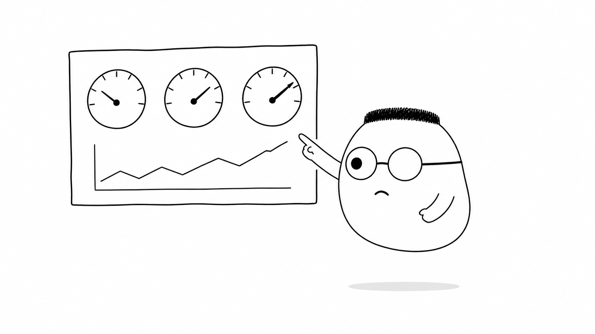
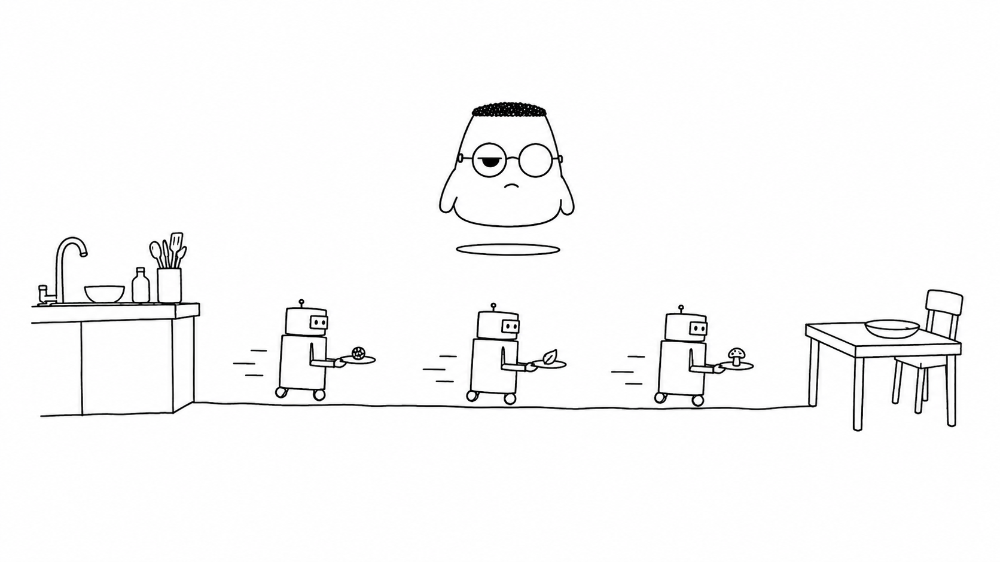
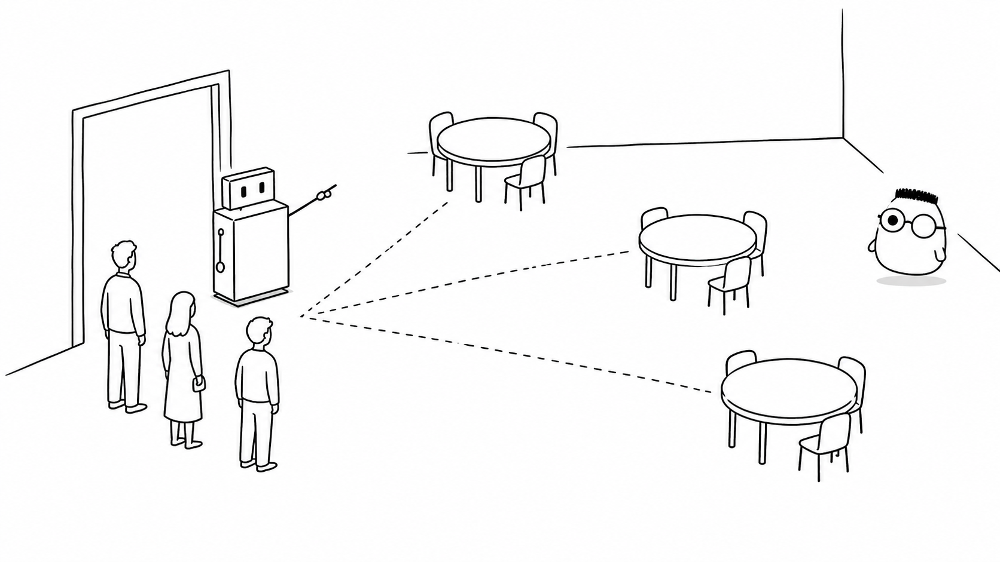

Masalah sehari-hari
Orang sering berkata aplikasi harus cepat. Kalimat itu belum memberi angka. Tiga menit bisa terasa singkat bagi satu layanan, tetapi terlalu lama bagi layanan lain.
Analogi Kuka
Kuka masuk ke restoran yang ramai. Resepsionis menerima request, lalu memilih meja kosong untuk setiap tamu. Meja yang cepat membuat tamu segera duduk dan makan.
Jika semua meja penuh, tamu berdiri dalam antrean. Dapur yang lambat, meja yang kurang, atau satu langkah yang bolak-balik bisa menjadi bagian paling macet.
Peta restoran
Waktu tunggu adalah latensi. Banyak piring yang keluar tiap jam adalah throughput. Meja yang menumpuk adalah bottleneck. Meja tambahan atau dapur yang lebih besar adalah scaling.
Ilustrasi

Papan angka membantu Kuka melihat keadaan sebenarnya. Ia tidak hanya bertanya apakah restoran cepat. Ia melihat berapa lama tamu menunggu dan bagian mana yang penuh.
Penjelasan konsep
Latensi adalah waktu dari request dimulai sampai hasil diterima. Seperti waktu tunggu tamu sejak memesan sampai piring tiba. Latensi yang kecil terasa cepat, tetapi satu angka saja belum menceritakan semua tamu.
Persentil membagi waktu tunggu menjadi kelompok. P50 menggambarkan tamu di tengah. P90 dan P99 menunjukkan tamu yang menunggu lebih lama. Persentil tinggi membantu Kuka menemukan pengalaman paling buruk.
Throughput adalah jumlah piring yang keluar tiap jam. Restoran dapat melayani lebih banyak tamu tanpa membuat setiap piring lebih cepat. Throughput dan latensi menjawab pertanyaan yang berbeda.
Bottleneck adalah bagian yang paling membatasi aliran kerja. Meja lain boleh kosong, tetapi satu dapur yang selalu penuh tetap membuat antrean panjang. Ukur bagian yang menumpuk sebelum memilih solusi.
Query N+1 terjadi saat pelayan kembali ke gudang untuk mengambil satu bahan setiap kali. Tiga pesanan membuat tiga perjalanan kecil, padahal satu keranjang dapat membawa semuanya sekaligus. Request tambahan itu membuat gudang dan pelayan bekerja lebih lama.

Utilisasi dan antrean
Utilisasi menunjukkan seberapa penuh dapur atau meja dipakai. Saat utilisasi mendekati penuh, sedikit pesanan tambahan dapat membuat antrean melonjak. Lihat waktu tunggu dan antrean, bukan hanya persentase kesibukan.
Profiling
Profiling seperti kamera waktu di dapur. Catatan itu menunjukkan juru masak atau langkah resep mana yang paling lama. Kuka dapat memperbaiki bagian yang benar, bukan menebak-nebak.
Distributed tracing
Tracing memberi satu nomor tiket pada perjalanan request. Kuka dapat melihat waktu di meja depan, dapur, dan gudang. Bagian yang lambat menjadi lebih mudah ditemukan.
Index dan query plan
Index seperti daftar isi buku besar. Pelayan dapat menemukan bahan tanpa membuka setiap halaman. Query plan menunjukkan cara database mencari catatan dan biaya tiap langkah.
Connection pooling
Pooling membuka jalur ke gudang sekali dan memakainya bergantian. Pelayan tidak perlu membuka dan menutup jalur baru untuk setiap piring.
Caching dasar
Cache adalah rak dekat dapur yang menyimpan bahan atau hasil yang sering diminta. Pelayan bisa mengambilnya tanpa berjalan ke gudang jauh.
Invalidasi cache
Jika resep atau bahan berubah, salinan di rak dekat harus diganti. Cache lama dapat membuat tamu menerima informasi yang sudah tidak benar.
Cache hit rate
Hit rate menunjukkan berapa banyak permintaan yang terjawab dari rak dekat. Hit rate tinggi mengurangi perjalanan ke gudang, selama isi rak tetap benar.
Vertical scaling berarti membeli kompor yang lebih besar untuk dapur yang sama. Mesin yang lebih kuat dapat menampung pekerjaan lebih banyak, tetapi ukuran dan batasnya tetap punya ujung.
Horizontal scaling berarti membuka meja dan juru masak tambahan. Beberapa mesin membagi pekerjaan, sehingga satu mesin yang penuh tidak menghentikan seluruh restoran.
Load balancing adalah resepsionis mesin yang membagi tamu ke meja kosong. Ia menjaga satu meja tidak menerima semua tamu sementara meja lain menganggur.

Diagram alur
Request masuk ke resepsionis. Jika meja kosong, tamu cepat dilayani dan puas. Jika meja penuh, antrean memanjang sampai tamu pergi.
Contoh mini
Jam sibuk: 12.00 Rata-rata tunggu: 2 menit Tamu paling sial: 40 menit Papan angka: antrean menumpuk Keputusan: tambah meja
Catatan seperti kartu pos ini memberi angka yang bisa dipakai untuk mengambil keputusan. Kuka menambah meja karena pengukuran menunjukkan tamu paling sial menunggu terlalu lama.
Ringkasan
Ukur latensi, persentil, dan throughput lebih dulu, temukan bottleneck seperti query N+1, lalu pilih vertical scaling, horizontal scaling, atau load balancing sesuai angka yang terlihat.
Pertanyaan pemahaman
- Kenapa "cepat" harus punya angka dan persentil, bukan kata-kata?
- Apa itu query N+1 dan kenapa melelahkan gudang?
- Apa beda membeli kompor lebih besar dan membuka cabang tambahan?
Mau lebih dalam
Versi teknis membahas pola caching dan strategi lain untuk mengukur serta memperbesar kapasitas layanan.